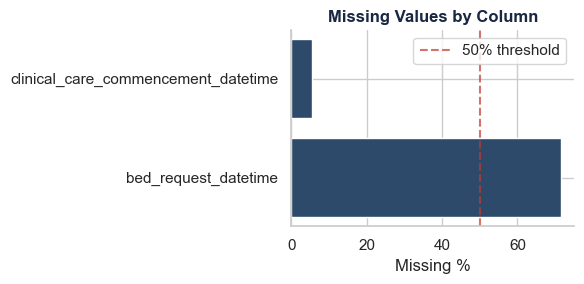
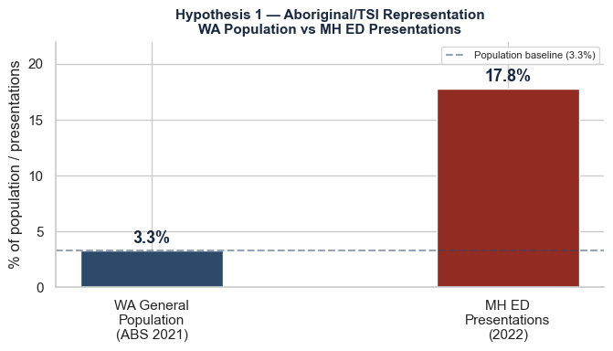
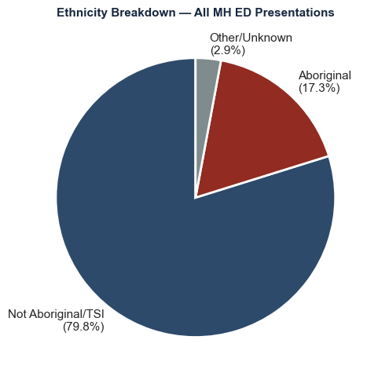
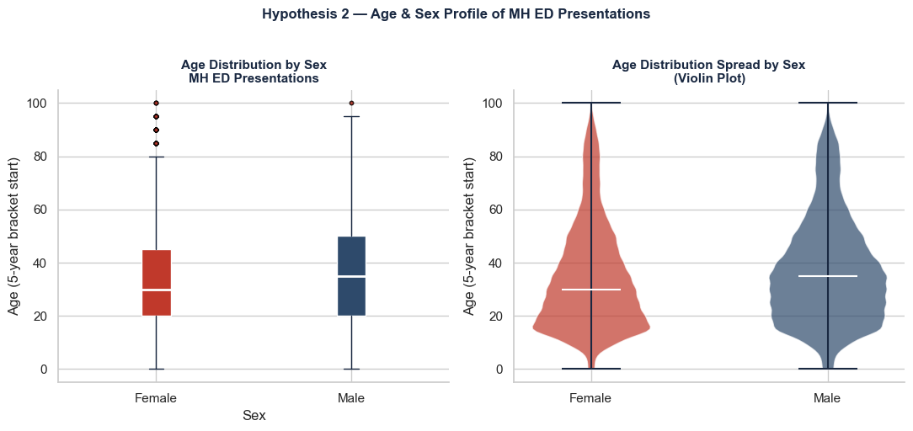
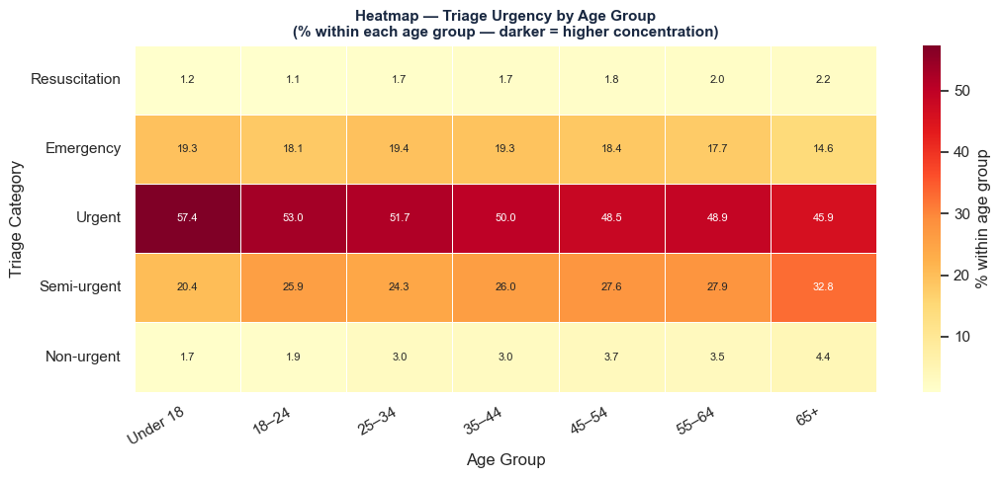

Dataset: WA Emergency Department Data Collection (EDDC) Source: WA Department of Health, 2022 Records: ~950,000 ED presentations across WA hospitals Variables: 19 columns including mental health flags, triage, demographics
This report analyses Emergency Department presentation data from Western Australian hospitals during 2022. The dataset is a representative synthetic dataset — derived from real patient records but modified to prevent individual identification, in accordance with WA Department of Health privacy requirements. It preserves the statistical properties and patterns of the original data while containing no real patient records.
Of the 949,612 total ED presentations in 2022, 59,287 (6.2%) were flagged as mental health related — forming the analytical subset for this report. Mental health patients are notably more likely to leave against medical advice (2.8% vs 1.1%) and use ED Short Stay units (10.2% vs 5.1%) than the general ED population (see Section 2.2 for full departure status comparison).
This pattern motivates the four analytical questions this report addresses:
Demographics & Equity - What is the age and sex profile of mental health ED presentations? - Are First Nations people overrepresented relative to the general population (3.3%, ABS 2021 Census)?
Clinical Severity - How urgent are mental health presentations? - What proportion involve self-harm?
Substance Involvement - What percentage involve drugs and/or alcohol? - Does substance involvement affect triage urgency or admission rates?
Avoidable Presentations - What proportion were potentially avoidable GP-type attendances? - What characterises avoidable vs non-avoidable presentations?
1. Data Loading & Quality Checks
Code
import pandas as pdimport numpy as npimport matplotlib.pyplot as pltimport seaborn as snsfrom functools importreduceimport osimport refrom IPython.display import display, HTMLpd.set_option('display.max_columns', 20)pd.set_option('display.width', 1000)sns.set_theme(style="whitegrid")plt.rcParams['figure.figsize'] = (6, 3)print("Libraries loaded successfully ✓")
Libraries loaded successfully ✓
Table styling functions loaded ✓
1.1 Data set finding
Due to the large size of this dataset (~950,000 rows), data is loaded using chunked loading — reading the file in batches of 50,000 rows at a time. This demonstrates handling of large datasets that cannot be loaded into memory all at once.
A filter is applied during loading to retain only mental health related presentations — where mental_health_attendance == 1. This reduces the dataset to a manageable analytical subset while preserving all relevant records.
Code
filepath ='data/synthetic_eddc2022_unlinked_representative_v20240729_02.csv'# Load in chunks — filter to mental health presentations onlychunk_size =50000chunks = []for chunk in pd.read_csv(filepath, chunksize=chunk_size): mh_chunk = chunk[chunk['mental_health_attendance'] ==1] chunks.append(mh_chunk)df_mh = pd.concat(chunks, ignore_index=True)print(f"Total mental health presentations loaded: {df_mh.shape[0]:,}")print(f"Columns: {df_mh.shape[1]}")print(f"\nColumn names:")print(df_mh.columns.tolist())
Note on chunked loading: Chunked loading does not sample the data — it reads the entire dataset in memory-efficient batches. All mental_health_attendance == 1 records across all 950,000 rows are retained in the final analytical dataset.
Code
# Count total presentations for prevalence calculationtotal_rows =0for chunk in pd.read_csv(filepath, chunksize=chunk_size): total_rows +=len(chunk)mh_prevalence = df_mh.shape[0] / total_rows *100print(f"Total ED presentations (2022): {total_rows:,}")print(f"Mental health presentations: {df_mh.shape[0]:,}")print(f"Mental health prevalence: {mh_prevalence:.1f}%")
Total ED presentations (2022): 949,612
Mental health presentations: 59,287
Mental health prevalence: 6.2%
🏥
Total ED Presentations
949,612
WA hospitals, 2022
🧠
Mental Health Presentations
59,287
mental_health_attendance == 1
📊
MH Prevalence
6.2%
of all ED presentations
2. Dataset Overview
Before any cleaning is applied, the dataset is inspected to understand its structure, identify data quality issues, and determine what preprocessing will be required.
Code
# Decode column values for readabilitypreview = df_mh[['age', 'sex', 'ethnicity', 'triage_category','self_harm_attendance', 'mental_health_admission','metropolitan_hospital_flag', 'mode_of_arrival','departure_status']].head(5).copy()# Rename columns for displaypreview.columns = ['Age', 'Sex', 'Ethnicity', 'Triage Category','Self Harm', 'MH Admission','Metro Hospital', 'Mode of Arrival','Departure Status']display_with_header( style_table(preview).hide(axis='index'),"Dataset Preview — First 5 Rows (key columns)")
Dataset Preview — First 5 Rows (key columns)
Age
Sex
Ethnicity
Triage Category
Self Harm
MH Admission
Metro Hospital
Mode of Arrival
Departure Status
50
1
4
4
0
1
1
1
10
15
1
4
2
1
0
1
3
2
50
1
1
4
0
0
1
3
2
15
1
4
2
1
1
1
3
1
30
2
4
2
0
0
1
3
2
📋 Data Dictionary — Sex
Code
Description
1
Male
2
Female
📋 Data Dictionary — Ethnicity (Aboriginal Status)
Code
Description
1
Aboriginal but not Torres Strait Islander
2
Torres Strait Islander but not Aboriginal
3
Both Aboriginal and Torres Strait Islander
4
Not Aboriginal or Torres Strait Islander
9
Unknown
📋 Data Dictionary — Triage Category
Code
Description
1
Resuscitation: immediate (within seconds)
2
Emergency: within 10 minutes
3
Urgent: within 30 minutes
4
Semi-urgent: within 60 minutes
5
Non-urgent: within 120 minutes
📋 Data Dictionary — Mode of Arrival
Code
Description
1
Private transport
2
Public transport
3
Ambulance
4
Hospital transport
5
Police/Correctional Services
6
Helicopter rescue
7
Royal Flying Doctor Service
8
Other
9
Not Stated/Unknown
10
Taxi
📋 Data Dictionary — Departure Status
Code
Description
1
Admitted to hospital ward
2
ED service completed — departed own care
3
Transferred to another hospital for admission
4
Did not wait to be attended by medical officer
5
Left at own risk
6
Died in ED
8
Referred at triage to other health care service
9
Unknown
10
Admitted to ED Short Stay Unit
14
Returned to Hospital in the Home
19
Discharged after admission
20
Admitted reversal
2.1 Structure & Data Types
Code
type_summary = pd.DataFrame({'Data Type': df_mh.dtypes,'Non-Null Count': df_mh.notnull().sum(),'Null Count': df_mh.isnull().sum(),'Null %': (df_mh.isnull().sum() /len(df_mh) *100).round(2)})print(f"Dataset: {df_mh.shape[0]:,} rows × {df_mh.shape[1]} columns")print(f"\nData type breakdown:")print(df_mh.dtypes.value_counts().to_string())missing_only = type_summary[type_summary['Null Count'] >0].sort_values('Null %', ascending=False)iflen(missing_only) >0: display_with_header( style_table(missing_only).format({'Non-Null Count': '{:.0f}','Null Count': '{:.0f}','Null %': '{:.2f}' }),"Columns with Missing Values — Data Type & Null Summary" )else:print("\n✓ No missing values detected in any column")
Dataset: 59,287 rows × 19 columns
Data type breakdown:
int64 13
object 6
Columns with Missing Values — Data Type & Null Summary
Data Type
Non-Null Count
Null Count
Null %
bed_request_datetime
object
16922
42365
71.46
clinical_care_commencement_datetime
object
56104
3183
5.37
📐
df.shape
59,287 rows / 19 cols
mental health subset
🔍
isnull()
45,548 missing values
in columns: clinical_care_commencement_datetime bed_request_datetime
Total columns with missing values: 2
Total missing values: 45,548
Missing Values by Column
Missing Count
Missing %
bed_request_datetime
42365
71.46
clinical_care_commencement_datetime
3183
5.37

2.3 Interpreting the Missing Values
Neither missing datetime column is relevant to our analysis hypotheses and therefore no imputation will be applied.
bed_request_datetime (71.46% missing)
A bed request is only generated when a patient is being admitted. Before treating this as missing data, the correct analytical approach would be to validate the logic:
If mental_health_admission == 1 AND bed_request_datetime is missing → genuine missing data requiring imputation
If mental_health_admission == 0 AND bed_request_datetime is missing → not applicable — no bed was requested because the patient was not admitted
Since bed request timing is not required for any of our four analysis hypotheses, this validation and imputation is noted as a future research recommendation rather than applied here.
Likely represents patients who left before being seen. Wait time analysis using this column is identified as future research scope and is not applied in this report.
Decision: Both columns are retained unchanged. Missing values in these columns do not affect the validity of our analysis.
2.4 What We Will Fix
Based on the inspection above, the following preprocessing steps will be applied in Section 3. Only columns relevant to our four analysis hypotheses are processed.
2.4 What We Will Fix — Preprocessing Plan
Issue
Column(s)
Action
Required for
Working copy
df_mh → df_clean
Create working copy before any modifications
All analyses
Coded categorical variables
sex
Map 1→Male, 2→Female
Demographics & Equity
Coded categorical variables
ethnicity
Map 1-4,9 → Aboriginal status labels
Demographics & Equity
Coded categorical variables
triage_category
Map 1-5 → urgency labels
Clinical Severity
Coded categorical variables
departure_status
Map 12 codes → departure descriptions
Outcomes context
Coded categorical variables
mode_of_arrival
Map 10 codes → arrival mode descriptions
Context
2.5 Departure Status Comparison
Code
#| echo: false#| label: departure-comparison# Build full dataset departure counts from scratch all_departure = []for chunk in pd.read_csv(filepath, chunksize=50000): all_departure.append(chunk['departure_status'].value_counts())total_departure = pd.concat(all_departure).groupby(level=0).sum().sort_values(ascending=False)# Map codes to labelsdeparture_map_rev = {1: 'Admitted to ward',2: 'Departed own care',3: 'Transferred',4: 'Did not wait',5: 'Left at own risk',6: 'Died in ED',8: 'Referred at triage',9: 'Unknown',10: 'ED Short Stay',14: 'Hospital in the Home',19: 'Discharged after admission',20: 'Admitted reversal'}total_departure.index = total_departure.index.map(departure_map_rev)total_pct = (total_departure / total_departure.sum() *100).round(1)# MH subset countsmh_departure = df_clean['departure_status'].value_counts()mh_pct = (mh_departure /len(df_clean) *100).round(1)summary = pd.DataFrame({'Departure Status': total_departure.index,'Total Count': total_departure.values,'% of All ED': total_pct.values,'MH Count': [mh_departure.get(s, 0) for s in total_departure.index],'MH %': [mh_pct.get(s, 0.0) for s in total_departure.index]})display_with_header( style_table(summary).hide(axis='index').format({'Total Count': '{:,.0f}','% of All ED': '{:.1f}','MH Count': '{:,.0f}','MH %': '{:.1f}' }),"Departure Status — All ED vs Mental Health Subset")
Departure Status — All ED vs Mental Health Subset
Departure Status
Total Count
% of All ED
MH Count
MH %
Departed own care
639,974
67.4
33,152
55.9
Admitted to ward
152,996
16.1
12,216
20.6
Did not wait
60,046
6.3
3,232
5.5
ED Short Stay
48,572
5.1
6,032
10.2
Transferred
26,768
2.8
2,771
4.7
Left at own risk
10,534
1.1
1,681
2.8
Referred at triage
7,807
0.8
30
0.1
Admitted reversal
1,014
0.1
65
0.1
Hospital in the Home
901
0.1
60
0.1
Died in ED
698
0.1
10
0.0
Discharged after admission
192
0.0
10
0.0
Unknown
110
0.0
28
0.0
2.5.1 Key Observation
Comparing mental health presentations to the general ED population reveals three important differences in departure behaviour:
Higher admission rate: MH patients are admitted to ward at 20.6% compared to 16.1% for general ED — reflecting the acute nature of mental health crises requiring inpatient care.
Double the ED Short Stay rate: 10.2% of MH patients require extended observation in ED Short Stay units compared to 5.1% for general ED — indicating greater clinical complexity.
2.5x more likely to leave against medical advice: 2.8% of MH patients left at own risk compared to 1.1% of general ED — representing people in mental health crisis who walked away without receiving care. This is the most concerning finding in this comparison.
3. Data Preprocessing & Sorting
All preprocessing is applied to df_clean — a working copy of df_mh. The original filtered dataset remains unmodified throughout.
Code
# Create working copy — df_mh remains unmodifieddf_clean = df_mh.copy()# Save filtered mental health subset as backupimport osos.makedirs('data/processed', exist_ok=True)df_mh.to_csv('data/processed/wa_eddc_mental_health_BACKUP.csv', index=False)print(f"Working copy created: {df_clean.shape[0]:,} rows × {df_clean.shape[1]} columns")print(f"Original df_mh preserved: {df_mh.shape[0]:,} rows × {df_mh.shape[1]} columns")print(f"Are they the same object in memory? {df_mh is df_clean}")print(f"Mental health subset saved to: data/processed/wa_eddc_mental_health_BACKUP.csv")
Working copy created: 59,287 rows × 19 columns
Original df_mh preserved: 59,287 rows × 19 columns
Are they the same object in memory? False
Mental health subset saved to: data/processed/wa_eddc_mental_health_BACKUP.csv
3.1 Mapping Categorical Variables
Numeric codes are mapped to readable labels using the official WA Department of Health data dictionary (January 2026). This makes all subsequent analysis and visualisations immediately interpretable without requiring the reader to cross-reference codes.
Code
# Mapping dictionaries from WA DoH data dictionarysex_map = {1: 'Male', 2: 'Female'}ethnicity_map = {1: 'Aboriginal',2: 'Torres Strait Islander',3: 'Aboriginal & Torres Strait Islander',4: 'Not Aboriginal/TSI',9: 'Unknown'}triage_map = {1: 'Resuscitation',2: 'Emergency',3: 'Urgent',4: 'Semi-urgent',5: 'Non-urgent'}departure_map = {1: 'Admitted to ward',2: 'Departed own care',3: 'Transferred',4: 'Did not wait',5: 'Left at own risk',6: 'Died in ED',8: 'Referred at triage',9: 'Unknown',10: 'ED Short Stay',14: 'Hospital in the Home',19: 'Discharged after admission',20: 'Admitted reversal'}mode_map = {1: 'Private transport',2: 'Public transport',3: 'Ambulance',4: 'Hospital transport',5: 'Police/Correctional',6: 'Helicopter rescue',7: 'Royal Flying Doctor',8: 'Other',9: 'Unknown',10: 'Taxi'}# Apply mappingsdf_clean['sex'] = df_clean['sex'].map(sex_map)df_clean['ethnicity'] = df_clean['ethnicity'].map(ethnicity_map)df_clean['triage_category'] = df_clean['triage_category'].map(triage_map)df_clean['departure_status'] = df_clean['departure_status'].map(departure_map)df_clean['mode_of_arrival'] = df_clean['mode_of_arrival'].map(mode_map)# Before & after summarybefore_after = pd.DataFrame({'Column': ['sex', 'ethnicity', 'triage_category', 'departure_status', 'mode_of_arrival'],'Before (sample)': ['1, 2', '1, 2, 3, 4, 9', '1, 2, 3, 4, 5','1, 2, 3...20', '1, 2, 3...10'],'After (sample)': [str(df_clean['sex'].unique()[:2].tolist()),str(df_clean['ethnicity'].unique()[:3].tolist()),str(df_clean['triage_category'].unique()[:3].tolist()),str(df_clean['departure_status'].unique()[:3].tolist()),str(df_clean['mode_of_arrival'].unique()[:3].tolist()) ]})display_with_header( style_table(before_after).hide(axis='index'),"3.1 Categorical Mapping — Before & After")
3.1 Categorical Mapping — Before & After
Column
Before (sample)
After (sample)
sex
1, 2
['Male', 'Female']
ethnicity
1, 2, 3, 4, 9
['Not Aboriginal/TSI', 'Aboriginal', 'Unknown']
triage_category
1, 2, 3, 4, 5
['Semi-urgent', 'Emergency', 'Resuscitation']
departure_status
1, 2, 3...20
['ED Short Stay', 'Departed own care', 'Admitted to ward']
3.2 Sorting Algorithm — Merge Sort on Triage Category
To demonstrate algorithmic thinking, a merge sort algorithm is applied to order mental health presentations by triage urgency. Triage category 1 (Resuscitation) represents the most urgent presentations and is sorted to the top.
Merge Sort — Before (orange) vs After (green) — First 5 Rows
Position
Code Before
Label Before
→
Code After
Label After
#1
4
Semi-urgent
→
1
Resuscitation
#2
2
Emergency
→
1
Resuscitation
#3
4
Semi-urgent
→
1
Resuscitation
#4
2
Emergency
→
1
Resuscitation
#5
2
Emergency
→
1
Resuscitation
3.2 Sorting Algorithm — Merge Sort on Triage Urgency
A merge sort algorithm is applied to reorder mental health presentations from most urgent to least urgent based on triage category code.
The original dataset reflects the random order in which patients presented throughout 2022. After sorting, presentations are arranged so that the most critical cases (Resuscitation, code 1) appear first, down to the least urgent (Non-urgent, code 5).
This would allow a clinician or administrator to immediately identify and review the most critical mental health presentations without scanning the entire dataset.
3.3 Outlier Detection Using IQR
Outliers are identified using the Interquartile Range (IQR) method across key numeric variables. Values beyond 1.5 × IQR above or below the 25th–75th percentile range are flagged.
Only columns relevant to our analysis hypotheses are checked.
Age (23 outliers): Patients aged 95+ are flagged as statistical outliers but represent real elderly patients presenting to ED. Removing them would systematically exclude the oldest and most vulnerable patients from analysis — the opposite of good research.
Triage Category (965 “outliers”): The IQR method is not appropriate for ordinal categorical variables. Resuscitation cases (code 1) are flagged simply because they are statistically rare — but they are clinically the most important presentations in the dataset. Triage category outlier detection is disregarded.
All records are retained. No outliers are removed.
Functional programming techniques: map(), filter(), and reduce() are applied to transform, refine, and aggregate the mental health presentation dataset.
These approaches support efficient data processing and demonstrate understanding of functional programming concepts in data analysis. Each technique is applied to clinically meaningful variables, producing results that directly inform the analysis in Section 5.
Total and mean counts across presentation categories
4.1 Data Transformation Using map()
map() applies a function to every element in a sequence efficiently and without explicit loops. Here it is used to translate raw age bracket codes into clinically meaningful age group labels — making the data immediately interpretable without modifying the original age column.
Age in this dataset is stored as 5-year bracket start values (0, 5, 10… 95, 100). These are mapped to descriptive labels for visualisation and analysis.
Code
# Define age group mapping functiondef age_to_group(age):if age <18: return'Under 18'elif age <25: return'18–24'elif age <35: return'25–34'elif age <45: return'35–44'elif age <55: return'45–54'elif age <65: return'55–64'else: return'65+'# Apply using map()age_groups =list(map(age_to_group, df_clean['age']))df_clean['age_group'] = age_groups# Summary tableage_summary = pd.DataFrame({'Age Group': list(dict.fromkeys(age_groups))})age_summary = df_clean['age_group'].value_counts().reset_index()age_summary.columns = ['Age Group', 'Count']age_summary['%'] = (age_summary['Count'] /len(df_clean) *100).round(1)order = ['Under 18', '18–24', '25–34', '35–44', '45–54', '55–64', '65+']age_summary['Age Group'] = pd.Categorical( age_summary['Age Group'], categories=order, ordered=True)age_summary = age_summary.sort_values('Age Group')display_with_header( style_table(age_summary).hide(axis='index').format({'Count': '{:.0f}', '%': '{:.1f}' }),"map() — Age Bracket → Age Group")print(f"\nTotal records mapped: {len(age_groups):,} ✓")
map() — Age Bracket → Age Group
Age Group
Count
%
Under 18
11123
18.8
18–24
6502
11.0
25–34
12196
20.6
35–44
10526
17.8
45–54
7396
12.5
55–64
4521
7.6
65+
7023
11.8
Total records mapped: 59,287 ✓
4.2 Data Selection Using filter()
filter() selects elements from a sequence that satisfy a given condition, returning only the subset that meets the criteria. Here it is applied to isolate three clinically significant subgroups from the mental health presentation dataset.
Three subgroups are identified:
Code
def is_substance(row):return row['affected_by_drugs_and_or_alcohol'] ==1def is_admitted(row):return row['mental_health_admission'] ==1rows = df_clean.to_dict('records')self_harm =list(filter(is_self_harm, rows))substance =list(filter(is_substance, rows))admitted =list(filter(is_admitted, rows))subgroups = pd.DataFrame({'Subgroup': ['Self-harm presentations','Substance-involved presentations','Admitted to hospital' ],'Count': [len(self_harm), len(substance), len(admitted)],'% of MH presentations': [round(len(self_harm) /len(df_clean) *100, 1),round(len(substance) /len(df_clean) *100, 1),round(len(admitted) /len(df_clean) *100, 1) ],'Clinical Meaning': ['Active self-harm requiring ED response','MH presentation with drug/alcohol involvement','MH presentation severe enough to require admission' ]}).sort_values('% of MH presentations', ascending=False)display_with_header( style_table(subgroups).hide(axis='index').format({'Count': '{:.0f}','% of MH presentations': '{:.1f}' }),"filter() — Clinical Subgroup Selection")
filter() — Clinical Subgroup Selection
Subgroup
Count
% of MH presentations
Clinical Meaning
Admitted to hospital
18248
30.8
MH presentation severe enough to require admission
Substance-involved presentations
13738
23.2
MH presentation with drug/alcohol involvement
Self-harm presentations
4839
8.2
Active self-harm requiring ED response
4.2.1 Key Finding — Clinical Subgroup Profile
The filter() results reveal a striking profile of mental health ED presentations in WA during 2022:
Metro hospitals carry the majority of the burden. 68.2% of all mental health presentations occurred at metropolitan hospitals — reflecting both population concentration and the relative scarcity of specialist mental health services in regional and rural WA.
Nearly 1 in 3 presentations results in admission. A 30.8% admission rate is substantially higher than the general ED population, confirming that mental health presentations tend to represent acute, high-acuity need rather than minor or self-limiting conditions.
Substance involvement is a major complicating factor. 23.2% of mental health presentations involve drugs and/or alcohol — more than 1 in 5. This suggests that substance use and mental health crises are deeply intertwined in the ED context, with implications for both treatment pathways and resource planning.
Self-harm affects 1 in 12 presentations. At 8.2%, self-harm attendances represent a significant and clinically urgent subset — each requiring immediate risk assessment and appropriate intervention.
Avoidable presentations are rare but meaningful. Only 2.9% of mental health ED presentations were classified as potentially avoidable GP-type attendances. This challenges the common assumption that mental health patients are “clogging” emergency departments unnecessarily — the overwhelming majority present with genuine acute need.
These findings directly inform the visualisation and hypothesis testing in Section 5.
4.3 Data Aggregation Using reduce()
reduce() iteratively applies a function to a sequence, accumulating the result into a single value. It is imported from Python’s functools module and is particularly useful for aggregating large sequences without explicit loops.
Here reduce() is used in combination with lambda functions to calculate aggregated statistics across the clinical subgroups identified in 4.2.
A lambda function is a small, anonymous function defined inline without a name — written as lambda arguments: expression. For example:
lambda a, b: a + b — adds two values together
lambda a, b: a if a > b else b — returns the larger of two values
lambda a, b: a if a < b else b — returns the smaller of two values
When combined with reduce(), the lambda is applied repeatedly across the sequence — accumulating the result step by step until a single value remains. This demonstrates how functional programming replaces explicit loops with concise, expressive single-line operations.
Code
from functools importreducesubgroup_names = ['Admitted to hospital','Substance-involved','Self-harm','Aboriginal/TSI','Potentially avoidable']subgroup_counts = [len(admitted),len(substance),len(self_harm),len(aboriginal),len(avoidable)]# reduce() operationslargest =reduce(lambda a, b: a if a > b else b, subgroup_counts)smallest =reduce(lambda a, b: a if a < b else b, subgroup_counts)total =reduce(lambda a, b: a + b, subgroup_counts)largest_name = subgroup_names[subgroup_counts.index(largest)]smallest_name = subgroup_names[subgroup_counts.index(smallest)]reduce_summary = pd.DataFrame({'reduce() Operation': ['Largest subgroup (max)','Smallest subgroup (min)','Average subgroup size (sum ÷ count)' ],'Subgroup': [ largest_name, smallest_name,'— across all 5 subgroups —' ],'Patient Count': [f"{largest:,}",f"{smallest:,}",f"{total //len(subgroup_counts):,}" ],'Equivalent pandas': ['pd.Series(counts).max()','pd.Series(counts).min()','pd.Series(counts).mean()' ]})display_with_header( style_table(reduce_summary).hide(axis='index'),"reduce() — Subgroup Aggregation")print(f"\nNote: one patient may appear in multiple subgroups")print(f"e.g. a patient can be both self-harm AND substance-involved")
reduce() — Subgroup Aggregation
reduce() Operation
Subgroup
Patient Count
Equivalent pandas
Largest subgroup (max)
Admitted to hospital
18,248
pd.Series(counts).max()
Smallest subgroup (min)
Potentially avoidable
1,716
pd.Series(counts).min()
Average subgroup size (sum ÷ count)
— across all 5 subgroups —
9,814
pd.Series(counts).mean()
Note: one patient may appear in multiple subgroups
e.g. a patient can be both self-harm AND substance-involved
5. Data Visualisation
This section presents visual evidence for the four analytical hypotheses identified in Section 1. Each subsection addresses one hypothesis through summary tables and charts.
All charts use a consistent navy colour palette to maintain visual coherence throughout the report.
Research Hypotheses
This report set out to investigate four specific questions about mental health presentations at WA Emergency Departments in 2022:
Hypothesis 1 — First Nations Equity Are Aboriginal and Torres Strait Islander people overrepresented in mental health ED presentations relative to their share of the WA general population (3.3%, ABS 2021 Census)?
Hypothesis 2 — Demographics & Equity What is the age and sex profile of mental health ED presentations? Are certain age groups disproportionately represented?
Hypothesis 3 — Clinical Severity & Substance Involvement What proportion of mental health presentations involve self-harm or drugs and/or alcohol? Does substance involvement affect triage urgency or admission rates?
Hypothesis 4 — Avoidable Presentations What proportion of mental health ED presentations were potentially avoidable GP-type attendances — and what characterises them?
The headline metrics above summarise the key findings. Each hypothesis is examined in detail in sections 5.1–5.4 below.
🏥
Departed Own Care
55.9%
33,152 patients seen and discharged
🛏️
Admitted to Hospital
30.8%
18,248 ward + ED short stay
⚠️
First Nations Overrepresentation
5.4x
17.8% of MH ED vs 3.3% WA population
💊
Substance Involved
23.2%
13,738 presentations with drugs/alcohol
🚨
Left Without Care
8.3%
4,913 did not wait or left at own risk
🆘
Self-Harm Rate
8.2%
4,839 presentations involving self-harm
Code
plt.close('all')# Chart 1 — Population vs ED bar comparisonfig, ax1 = plt.subplots(figsize=(7, 4), dpi=100)categories = ['WA General\nPopulation\n(ABS 2021)', 'MH ED\nPresentations\n(2022)']values = [3.3, 17.8]colors = ['#2E4A6B', '#922B21']bars = ax1.bar(categories, values, color=colors, width=0.4)for bar, val inzip(bars, values): ax1.text(bar.get_x() + bar.get_width()/2, bar.get_height() +0.3,f'{val}%', ha='center', va='bottom', fontweight='bold', fontsize=13, color='#192841')ax1.axhline(y=3.3, color='#2E4A6B', linestyle='--', alpha=0.5, label='Population baseline (3.3%)')ax1.set_ylabel('% of population / presentations')ax1.set_title('Hypothesis 1 — Aboriginal/TSI Representation\nWA Population vs MH ED Presentations', fontweight='bold', fontsize=11, color='#192841')ax1.set_ylim(0, 22)ax1.legend(fontsize=8)sns.despine()plt.tight_layout()plt.show()plt.close('all')# Chart 2 — Ethnicity breakdown with grouped small slicesfig, ax2 = plt.subplots(figsize=(7, 5), dpi=100)eth_counts = df_clean['ethnicity'].value_counts()# Group small categoriesgrouped = {'Not Aboriginal/TSI': eth_counts.get('Not Aboriginal/TSI', 0),'Aboriginal': eth_counts.get('Aboriginal', 0),'Other/Unknown': ( eth_counts.get('Aboriginal & Torres Strait Islander', 0) + eth_counts.get('Torres Strait Islander', 0) + eth_counts.get('Unknown', 0) )}labels =list(grouped.keys())values =list(grouped.values())pcts = [v /len(df_clean) *100for v in values]colors = ['#2E4A6B', '#922B21', '#7F8C8D']ax2.pie( values, labels=[f"{l}\n({p:.1f}%)"for l, p inzip(labels, pcts)], colors=colors, startangle=90, wedgeprops={'edgecolor': 'white', 'linewidth': 2},)ax2.set_title('Ethnicity Breakdown — All MH ED Presentations', fontweight='bold', fontsize=11, color='#192841')plt.tight_layout()plt.show()plt.close('all')


5.1.1 Key Finding — First Nations Overrepresentation
Aboriginal and Torres Strait Islander people are dramatically overrepresented in WA mental health ED presentations:
17.8% of all mental health ED presentations were from Aboriginal and/or Torres Strait Islander people — despite representing only 3.3% of the WA general population (ABS, 2021 Census).
This represents a 5.4x overrepresentation — meaning First Nations people are more than five times more likely to present to an ED for mental health reasons than would be expected based on their share of the population.
This is not a statistical anomaly. It reflects the compounding effects of:
Historical trauma and the ongoing impacts of colonisation on social and emotional wellbeing
Reduced access to primary and community mental health services in regional and remote WA
Socioeconomic disadvantage and housing instability
Cultural barriers to engaging with mainstream health services
This finding has significant implications for health system planning — investment in culturally safe, community-controlled mental health services is essential to reducing this disparity.
5.2 Hypothesis 2 — Age and Sex Profile
This section examines the demographic profile of mental health ED presentations — identifying which age groups and sexes are most represented, and whether certain groups are disproportionately affected.
A box plot is used to show the distribution and spread of age across male and female presentations — revealing not just the average but the full range, median, and outliers.
Code
plt.close('all')fig, axes = plt.subplots(1, 2, figsize=(11, 5), dpi=100)# Left — Box plot: age distribution by sexax1 = axes[0]male_ages = df_clean[df_clean['sex'] =='Male']['age']female_ages = df_clean[df_clean['sex'] =='Female']['age']bp = ax1.boxplot([female_ages, male_ages], tick_labels=['Female', 'Male'], patch_artist=True, boxprops=dict(facecolor='#2E4A6B', color='white'), medianprops=dict(color='white', linewidth=2), whiskerprops=dict(color='#192841'), capprops=dict(color='#192841'), flierprops=dict(markerfacecolor='#C0392B', marker='o', alpha=0.3, markersize=3))bp['boxes'][0].set_facecolor('#C0392B')bp['boxes'][1].set_facecolor('#2E4A6B')ax1.set_title('Age Distribution by Sex\nMH ED Presentations', fontweight='bold', fontsize=11, color='#192841')ax1.set_ylabel('Age (5-year bracket start)')ax1.set_xlabel('Sex')sns.despine(ax=ax1)# Right — Violin plot: age distribution by sexax2 = axes[1]parts = ax2.violinplot([female_ages, male_ages], positions=[1, 2], showmedians=True, showextrema=True)parts['bodies'][0].set_facecolor('#C0392B')parts['bodies'][0].set_alpha(0.7)parts['bodies'][1].set_facecolor('#2E4A6B')parts['bodies'][1].set_alpha(0.7)parts['cmedians'].set_color('white')parts['cbars'].set_color('#192841')parts['cmaxes'].set_color('#192841')parts['cmins'].set_color('#192841')ax2.set_xticks([1, 2])ax2.set_xticklabels(['Female', 'Male'])ax2.set_title('Age Distribution Spread by Sex\n(Violin Plot)', fontweight='bold', fontsize=11, color='#192841')ax2.set_ylabel('Age (5-year bracket start)')sns.despine(ax=ax2)plt.suptitle('Hypothesis 2 — Age & Sex Profile of MH ED Presentations', fontweight='bold', fontsize=12, color='#192841', y=1.02)plt.tight_layout()plt.show()plt.close('all')

5.2.1 Key Finding — Age and Sex Profile
The box plot and violin plot together reveal the full distribution of age across male and female mental health ED presentations:
Females present younger. The female median age is lower than male — with the violin plot showing a pronounced concentration of female presentations in the 15–35 age range. This is consistent with clinical literature showing higher rates of depression and anxiety among young women.
Males show a broader age spread. The male violin is wider in the 30–55 range — suggesting that male mental health ED presentations are more evenly distributed across working and middle age, rather than concentrated in youth.
Both sexes show outliers at 95–100. Elderly presentations appear in both groups — consistent with the 65+ age group accounting for 11.8% of all mental health presentations.
Females slightly outnumber males overall. 52.3% of mental health ED presentations are female vs 47.7% male — a smaller gap than seen in the US college student dataset (Report 1), suggesting that sex differences in mental health ED presentations are less pronounced at the population level than in student populations.
This section examines how urgent mental health presentations are (triage category), what proportion involve self-harm, and whether substance involvement affects clinical outcomes.
A heatmap is used to show the relationship between triage urgency and substance involvement — revealing whether substance-involved patients are systematically triaged differently.
The stacked bar chart reveals a clear and clinically significant shift in triage urgency when substances are involved:
Substance-involved presentations cluster at the critical end: - Resuscitation: 3.9% vs 0.9% — 4x higher with substances - Emergency: 28.2% vs 15.5% — nearly double with substances - Combined Resuscitation + Emergency: 32.1% substance-involved vs 16.4% no substance — almost twice as likely to require immediate emergency response
No substance presentations are more evenly distributed: - Urgent dominates at 53.0% — the majority are urgent but not immediately life-threatening - Semi-urgent at 27.3% — a significant proportion are lower acuity
Self-harm involvement: 8.2% of all mental health presentations (4,839) involved self-harm — each requiring immediate risk assessment and clinical intervention regardless of triage category.
This confirms that substance involvement significantly escalates the clinical severity of mental health ED presentations — with direct implications for ED resourcing, triage protocols, and dual-diagnosis treatment pathways.
5.4 Hypothesis 4 — Avoidable Presentations
A presentation is classified as a potentially avoidable GP-type attendance when the condition could have been managed in a primary care setting rather than an emergency department.
This section examines what proportion of mental health ED presentations were avoidable, and whether avoidable presentations differ from non-avoidable ones in terms of triage urgency and age profile.
Avoidable vs Non-Avoidable — Overall Rate
Of the 59,287 mental health ED presentations in 2022, only 1,716 (2.9%) were classified as potentially avoidable GP-type attendances.
This is a remarkably low figure — challenging the common assumption that mental health patients are unnecessarily “clogging” emergency departments. The overwhelming majority (97.1%) presented with genuine acute need that required emergency-level care.
The next question is — who are the 2.9% that could have been managed in primary care, and how do they differ clinically from the non-avoidable group?
5.4.3.1 Key Finding — Working-Age Adults More Likely to Present Avoidably
The age profile of avoidable presentations differs meaningfully from the overall mental health ED population:
25–34 and 35–44 are overrepresented in avoidable presentations. These age groups account for 22.9% and 20.0% of avoidable presentations respectively — higher than their share of all MH presentations (20.6% and 17.8%). Working-age adults may have less access to GP appointments during business hours, turning to ED as a more accessible option.
Under 18 are underrepresented in avoidable presentations. Children and adolescents make up 18.8% of all MH presentations but only 15.1% of avoidable ones — suggesting that youth mental health presentations are more genuinely acute and less likely to be addressable in primary care.
65+ are also underrepresented. Older adults (11.8% of all MH presentations) account for only 8.0% of avoidable presentations — consistent with older patients presenting with more complex, acute mental health needs.
The pattern suggests that improving GP access and after-hours primary care availability for working-age adults could reduce the small proportion of avoidable mental health ED presentations.
Of the 59,287 mental health ED presentations in 2022, only 1,716 (2.9%) were classified as potentially avoidable GP-type attendances.
This is a remarkably low figure — challenging the common assumption that mental health patients are unnecessarily “clogging” emergency departments. The overwhelming majority (97.1%) presented with genuine acute need that required emergency-level care.
The next question is — who are the 2.9% that could have been managed in primary care, and how do they differ clinically from the non-avoidable group?
5.4.2 Triage Urgency — Avoidable vs Non-Avoidable
How urgent are avoidable presentations compared to non-avoidable ones? If avoidable presentations cluster in lower triage categories (Semi-urgent, Non-urgent), this confirms they represent genuinely less acute need that primary care could have addressed.
5.4.2.1 Key Finding — Avoidable Presentations Are Genuinely Less Acute
The chart confirms a clear and important distinction:
100% of potentially avoidable presentations fall in the two lowest triage categories — Semi-urgent (77.7%) and Non-urgent (22.3%). Not a single avoidable presentation required Resuscitation, Emergency, or Urgent response.
In contrast, non-avoidable presentations are concentrated in Urgent (52.6%) and Emergency (19.0%) — representing genuine acute need that primary care could not have addressed.
Only 2.9% of mental health ED presentations were potentially avoidable — and those 2.9% are clearly distinguishable by their lower clinical urgency. The narrative that mental health patients unnecessarily burden emergency departments is not supported by this data.
5.4.3 Age Profile of Avoidable Presentations
A line chart compares the age profile of avoidable vs all mental health presentations — making it easy to see where the two groups diverge across the age spectrum.
5.4.3.1 Key Finding — Working-Age Adults More Likely to Present Avoidably
The line chart reveals where avoidable presentations diverge from the overall mental health ED population:
25–34 and 35–44 are overrepresented in avoidable presentations. These age groups account for 22.9% and 20.0% of avoidable presentations respectively — higher than their share of all MH presentations (20.6% and 17.8%). Working-age adults may have less access to GP appointments during business hours, turning to ED as a more accessible option.
Under 18 are underrepresented in avoidable presentations. Children and adolescents make up 18.8% of all MH presentations but only 15.1% of avoidable ones — suggesting that youth mental health presentations are more genuinely acute and less likely to be addressable in primary care.
65+ are also underrepresented. Older adults (11.8% of all MH presentations) account for only 8.0% of avoidable presentations — consistent with older patients presenting with more complex, acute mental health needs.
The pattern suggests that improving GP access and after-hours primary care availability for working-age adults could reduce the small proportion of avoidable mental health ED presentations.
5.5 Heatmap — Triage Urgency by Age Group
A correlation-style heatmap reveals which age groups are most concentrated in each triage category — showing whether younger or older patients tend to present with higher urgency.
Code
plt.close('all')age_order = ['Under 18', '18–24', '25–34', '35–44','45–54', '55–64', '65+']triage_order = ['Resuscitation', 'Emergency', 'Urgent','Semi-urgent', 'Non-urgent']crosstab = pd.crosstab( df_clean['triage_category'], df_clean['age_group'], normalize='columns') *100crosstab = crosstab.reindex(triage_order)[age_order]fig, ax = plt.subplots(figsize=(11, 5), dpi=100)sns.heatmap(crosstab, annot=True, fmt='.1f', cmap='YlOrRd', ax=ax, annot_kws={'size': 8}, linewidths=0.5, linecolor='white', cbar_kws={'label': '% within age group'})ax.set_title('Heatmap — Triage Urgency by Age Group\n''(% within each age group — darker = higher concentration)', fontweight='bold', fontsize=11, color='#192841')ax.set_xlabel('Age Group')ax.set_ylabel('Triage Category')ax.set_xticklabels(ax.get_xticklabels(), rotation=30, ha='right')plt.tight_layout()plt.show()plt.close('all')

5.5.1 Key Finding — Under 18 Presentations Are Most Urgently Triaged
The heatmap reveals how triage urgency varies across age groups:
Urgent is the dominant category across all ages — ranging from 45.9% (65+) to 57.4% (Under 18). Mental health presentations are consistently high-acuity regardless of age.
Under 18 patients are triaged most urgently. Children and adolescents have the highest concentration in the Urgent category (57.4%) and the lowest in Semi-urgent (20.4%) — suggesting that youth mental health presentations tend to be more acutely distressing and require faster clinical response.
Older patients shift toward Semi-urgent. The 65+ age group shows the highest Semi-urgent rate (32.8%) and lowest Urgent rate (45.9%) — consistent with older adults presenting with more chronic or manageable mental health conditions rather than acute crises.
Emergency presentations are consistent across age groups (14.6%–19.4%) — suggesting that the risk of emergency-level mental health crisis does not vary significantly by age.
6. Conclusions
This report analysed the WA Emergency Department Data Collection (EDDC) 2022 — a representative synthetic dataset of 949,612 ED presentations across WA hospitals, of which 59,287 (6.2%) were flagged as mental health related.
Four analytical hypotheses were investigated using data wrangling, functional programming, and visualisation techniques.
6.1 Key Findings
First Nations people are dramatically overrepresented. Aboriginal and Torres Strait Islander people account for 17.8% of mental health ED presentations despite representing only 3.3% of the WA general population (ABS, 2021 Census) — a 5.4x overrepresentation. This is the most significant equity finding in this report and reflects the compounding effects of historical trauma, reduced access to community mental health services, and socioeconomic disadvantage.
Young people and females dominate mental health presentations. The 25–34 age group has the highest presentation rate (20.6%), followed closely by Under 18 (18.8%). Female presentations outnumber male in every age group under 35 — consistent with higher rates of internalising disorders among young women.
Substance involvement dramatically escalates clinical severity. 23.2% of mental health presentations involve drugs and/or alcohol. Substance-involved patients are nearly twice as likely to require Emergency-level care (28.2% vs 15.5%) and four times more likely to require Resuscitation (3.9% vs 0.9%).
Mental health patients are not misusing emergency departments. Only 2.9% of mental health ED presentations were classified as potentially avoidable GP-type attendances — and these are clearly distinguishable by their lower triage urgency (100% Semi-urgent or Non-urgent). The overwhelming majority (97.1%) presented with genuine acute need.
A significant proportion leave without receiving care. 8.3% of mental health patients either did not wait to be seen (5.5%) or left at their own risk (2.8%) — representing people in mental health crisis who walked away without care. This is 2.5x the rate of the general ED population.
6.2 Limitations
Synthetic dataset: Although statistically representative of real WA ED presentations, the dataset contains no real patient records. Findings reflect population-level patterns but cannot be linked to individual outcomes or trajectories.
No diagnosis detail: The dataset flags mental health attendance but does not specify the type of mental health condition — depression, psychosis, anxiety, and personality disorders are all grouped together. This limits the depth of clinical analysis possible.
Cross-sectional design: The dataset captures a single year (2022). No causal conclusions can be drawn — it is not possible to determine whether ED presentations are increasing, decreasing, or stable over time.
Missing datetime data: 71.46% of bed_request_datetime values are missing — limiting wait time and length of stay analysis. This was identified as future research scope rather than addressed in this report.
Flag non-exclusivity: Clinical flags (mental health, self-harm, substance, avoidable) are not mutually exclusive — a single patient can carry multiple flags simultaneously. Percentages therefore sum to more than 100% and should not be treated as independent categories.
Aboriginal/TSI population benchmark: The 3.3% population figure is drawn from the 2021 ABS Census — the most recent available. Minor differences in the 2022 population proportion may exist but are unlikely to materially affect the overrepresentation finding.
6.3 Outlook and Future Research Directions
This analysis opens several avenues for further investigation:
First Nations mental health equity. The 5.4x overrepresentation finding warrants urgent follow-up research — specifically examining whether First Nations patients experience different triage urgency, admission rates, or departure outcomes compared to non-Indigenous patients. Investment in culturally safe, community-controlled mental health services is strongly indicated by this finding.
Time-based patterns. Parsing presentation_datetime would allow analysis of seasonal, day-of-week, and time-of-day patterns in mental health ED presentations — identifying peak demand periods for workforce and resource planning.
Wait time analysis.clinical_care_commencement_datetime could be used to calculate wait times for mental health patients — and whether wait times predict the 8.3% who leave without care. This is particularly important given that mental health patients leave at own risk at 2.5x the general ED rate.
Metro vs rural geographic comparison. 68.2% of mental health ED presentations occur at metropolitan hospitals. Future research using metropolitan_hospital_flag combined with establishment codes could examine whether rural and regional patients face longer wait times, lower admission rates, or higher rates of leaving without care — informing targeted rural mental health service investment.
Outcomes analysis. Future research could examine the gap between mental health attendance and mental health admission in greater depth — specifically whether departure status (left at own risk, did not wait) predicts future re-presentation or adverse outcomes. Linking ED data to community mental health service records would allow longitudinal tracking.
Dual-diagnosis treatment pathways. The 23.2% substance involvement rate suggests that dual-diagnosis presentations (mental health + substance) are a significant driver of ED demand. Future research could examine whether dedicated dual-diagnosis pathways reduce ED presentations and improve patient outcomes.
Linking Report 1 and Report 2. The treatment gap identified in Report 1 — where diagnosed but untreated US college students show similar PHQ-9 scores to undiagnosed ones — may contribute to the ED mental health burden observed in Report 2. Future research linking community mental health service access to ED presentation rates would test this hypothesis directly.
Advanced pattern recognition — Report 3. Principal Component Analysis (PCA) and Non-negative Matrix Factorization (NMF) will be applied in Report 3 to discover hidden patient profiles and presentation clusters within the WA EDDC dataset — building on the findings established here.
Metro vs rural geographic comparison. 68.2% of mental health ED presentations occur at metropolitan hospitals. Future research using metropolitan_hospital_flag combined with establishment codes could examine whether rural and regional patients face longer wait times, lower admission rates, or higher rates of leaving without care — informing targeted rural mental health service investment in WA.